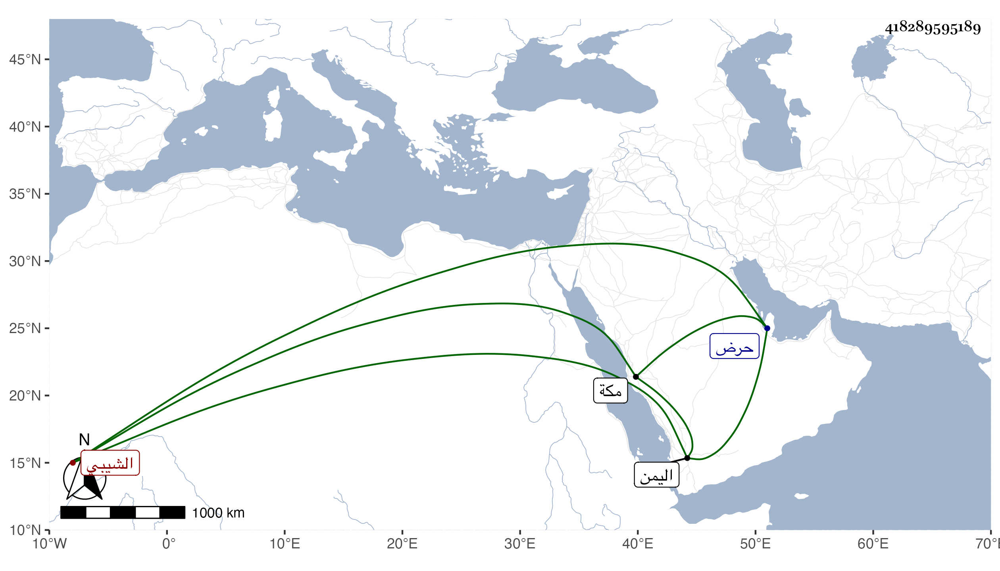

0902Sakhawi.DawLamic.ITO20230111-ara1.EIS1600.418289595189
Biography ID: 418289595189
119
علي بن موسى بن أبي بكر بن محمد الشيبي من بني شيبة حجبة الكعبة قريب محمد بن أحمد بن حسين بن بكر الآتي . دخل جد أبيه محمد اليمن فوصل إلى حرض فخرج إلى الحادث ساحل مور وهو واد عظيم به عدة قرى منها الحسانية قرية أبي حسان بن محمد الأشعري وكان ممن يعتقد فأتفق وقوع فتنة بين طائفتين من قومه قتل فيها قتيل فاستوهب دمه فقالوا له : بشرط أن تسكن معه فأسس لهم مكان قرية فسكنوه وهو معهم فنسبت إليه ، واتسعت دنياه لقصده بالنذور من عدة بلاد وكانت له أخت فزوجها بمحمد المذكور لتفرسه فيه الخير فأقامت عنده إلى أن حملت ، وتوجه لمكة بعد أن عاهد امرأته أنها إن ولدت ذكرا تسميه أبا بكر ففعلت ، ومات خاله أبو حسان فخلفه في زاويته وظهرت له كرامات ثم خلفه في زاويته ابن له يسمى عليا ، وكان كثير العبادة والتجريد ويقال أنه قعد مدة لا يأكل في الأسبوع غير مرة ولم يتعلق بشيء من أمور الدنيا ثم خلفه ابنه اسحق وكان على طريقته فلما مات خلفه عمه موسى وكان عابدا صاحب مكاشفات وكرامات ذكيا مذاكرا فلما مات قام ولده علي فاشتهر بالصلاح والذكاء والسخاء وحسن الخلق وكثرة الخير وطول الصمت مع إدمانه لسماع الحديث والتفسير على الفقيه أحمد العلقي وكان نزل فيهم بل تزوج الفقيه علي أخته وكان أعني عليا يذاكر بكثير من الحديث والتاريخ والسيرة مع المحافظة على الوضوء وصلاة الجماعة وكونه موسعا عليه في الدنيا متجملا بأحسن الثياب . مات سنة إحدى عشرة وخلفه ابنه عبد الله الماضي . ذكره شيخنا في أنبائه تبعا للشيخ حسين بن الأهدل في ذيله علي الجندي .
